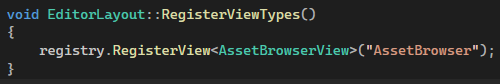

Views
An Editor View is a panel or window that provides a specific tool or piece of functionality within the editor. Examples include the Asset Browser, Game View, Scene View, and Console. Views can be opened, closed, and arranged by the user.
Registering Views Types

After you register them, they will automaticly appear in the engines main menu bar, under the “Views” category.
Creating a View
To create a custom View, create a class that inherits from [“IEditorView.h”] The new view must also have the macro [“VIEW_BASICS(viewname)”] within its class scope.